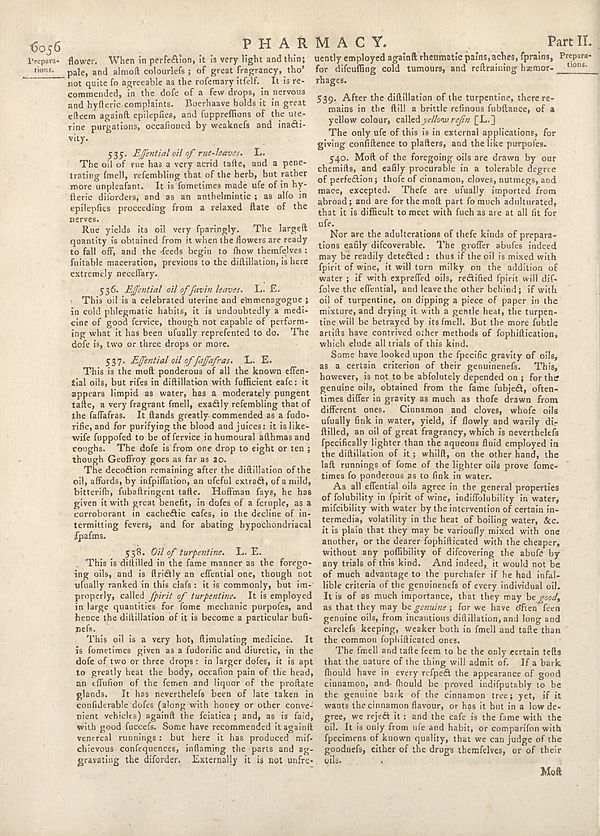

Source · scan and Parse blocks
Layers 6

Parse text by block reading order
- 0Page-header6056
- 1Title**PHAR MACY.**
- 2CaptionPart II.
- 3TextPreparations.
- 4Textflower. When in perfection, it is very light and thin; pale, and almost colorules ; of great fragrance, the’ not quite for a belemary idelf. It is recomended, in the dole of a few drops, in nervous and hyfleric complaints. Borchave holds it ing great efeem againit epilepties, and fuppreffions of the use- trie purgurations, occaulted by weakens and indelh- vity.
- 5Section-header_535: Efential oil of ruse-laaves._ L. L.
- 6TextThe oil of rue has a very acid tafes, and a gene- trating (well, refreshing the one of the herb, but rather more unpleasant. It is fometimes made uie of in hy- fferic diforders, and as an anthelmintic ; as alfo in epilepfics proceeding from a relaxed flate of the nerves.
- 7TextRue yields its oil very faringly. The larger quantity is obtained from which the flowers are ready to fall off, and the feeds begin to flow them!veres : fuitable maceration, previous to the distillation, is here extremely mesclitary.
- 8Section-header_536: Efential oil of fuerin leaves_ L. E.
- 9TextThis oil is a celebrated uterine and emmenagogue ; in cold plegnatic habits, it is undoubtedly a medi-cine of good fender, though not capable of performing what it has been usually represented to do. The dole is, two or three drops or more.
- 10Section-header_537: Efential oil of fulnfras_ L. E.
- 11TextThis is the most pondense of all the known effen-tial oils, but ribs in distillation with efficient cafe: it appears limpid as water, has a moderately pungent taste, a very fragment (well), exactly remember that of the inflates. If hands greatly commended a a flourir, and for purifying the blood and joves: it is like- wife topped to be of review in humoural ashmas and coughs. The dole is from one chop to eight or ten , though Geoffroy goes as far as so.
- 12TextThe decoction remaining after the distillation of the oil, afford, by infiltration, an useful extract of a mold, bitterth, albalkringed tafte. Hufman fays, he has given it with great benefits, in doses of a teruple, as a corroborant in cachethe cafes, in the decline of interming fevers, and for abating hypochondriacal fpafms.
- 13Section-header_538: Oil of turpentine_ L. E.
- 14TextThis is distilled in the time manner as the forego- ing oils, and is finally an official one, though not ufually ranked in this clafa: it is commonly, but im- properly, called _fprins of turpentine_. It is employed in large quantities for tone mechanic purpoda and hence the distillation of it is become a particular bufi-neis.
- 15TextThis oil is a sexy hot, stimulating medicine. It is fometines given as a fudorlic and diuretic, in the dole of two or three drops in larger doses, it is apt to greetly heat the body, coactalion pain of the head, an effusion of the fenect and liquor of the parasite glands. It has nevertheless been of late taken in considerable dofer (along with honey or other convict wolhic) against the delicate ; and, as is field, with good facects. Some have recommended it against vertical ruminants - but here I is has produced mir- chievous consequences, influming the parts and ag-gravating the diforder. Externally it is not unfre
- 16Textnestly employed against rheumatic pains, aches, fprains, for dicuffing cold tumours, and restraining hemors- rhages.
- 17Text539. After the distillation of the turpentine, there re- manus in the fill a brittle refinous folblance, of a yellow colour, called _yellow refin [L.]_.
- 18TextThe only uie of this is in external applications, for giving confidence to platters, and the like purposes.
- 19Text_540. Most of the foregoing oils are drawn by our chemits, and easily procurable in a tolerable degree of perfections i thofe of cinnamon, cloves, numanges, and maces, accepted. There are usually imported from abroad ; and are for the molt part fo much adulterated, that it is difficult to meet with fuch as are at all fit for life.
- 20TextNor are the adulterations of thefe kinds of prepara-tions easily disconoable. The groffer abubic indeed may be readily detected, thus if the oil is mixed with fpirit of wine, it will turn milky on the addition of water ; if with spearful oils, rectificil spirit will differ the eficient, and leave the ober behind; if with oil of turpentine, no dipping a piece of paper in the mixture, and drying it with a gentle heat, the turpen- we will be betrayed by its final). But the more fubble artift have corrected other methods ofophilisation, which elude all trials of this kind.
- 21TextSome have looked upon the specific gravity of oils, as a certain criterion of their genunements. This, however, is not to be ablotely depended on ; for the genuine oils, obtained from the fabelj, often- times differ in gravity as much as those draws from different ones. Cinnamon and cloves, whole oils ufually link to water, yield, if flowly and vastly di- filled, as oil of great fragency, which is nevertheless specifically lighter than the aqueous fluid employed in the distillation of it; whillts, on the other hand, the full rumants of some of the lightest oils prove feme-times to poucious as to funk in water.
- 22TextAs all efential oils agree in the general properties of fishability to prints of wine, individuality in waters, mifcibility with water by the intervention of certain intermedies, volatility in the least of boiling water, &c. is la plain that they may be variously mixed with one another, or the denser highlifted with the cheapys, without any polifficiency of discovering the abuse by any trials of this kind. And indeed, it would not be of much advantages to the purchase if he had inflaible criteria of the genunements of every individual oil. It is of as much importance, then they may be _goods_, as that they may be _genuers_; for we have often seen genuine oils, from incautious dililitations, and long and careful keeping, weaker both in fuell and tafte than the common sophisticated ones.
- 23TextThe fuell and tafte form to be the only certain tells that the nature of the thing will admit of. If a bark flould have in every refined the appearance of good cinnamon, and flould be proved indispensable to be the genuine bark of the cinnamon trees yet, if it wants the cinnamon flavors, or has it but in low deer, we yriclet it and the cage is the time with the oil. It is only from uie and habit, or comparison with fpecinens of known quality, that we can judge of the goodhefs, either of the droge themfrelves, or of their oils.
- 24Page-footer**Molt**
Provenance page_id, checksum, Parse model
- page_id
- britannica:309f765b1ecc83e0a7f7762e44b4a927a7555443:train:1939
- sha256
- 0f50bb0b2f406428516bb469f72abc9fc9fa54cdb87fbdff0adae232ef9c2384
- Parse
- nvidia/nemotron-3.5-parse · finish stop